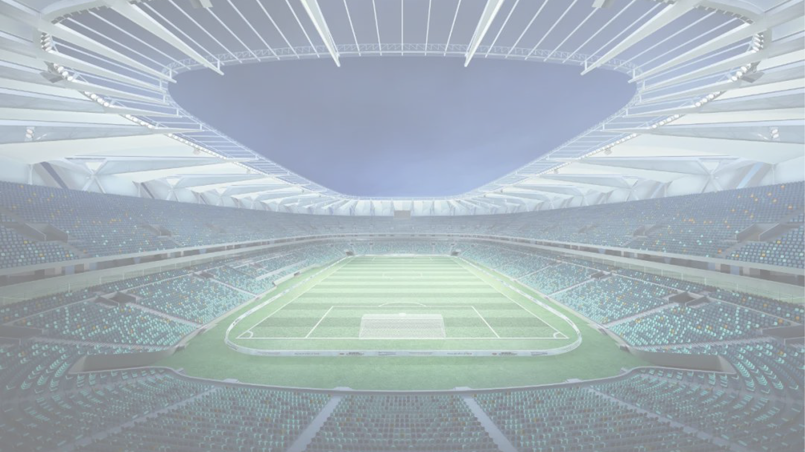
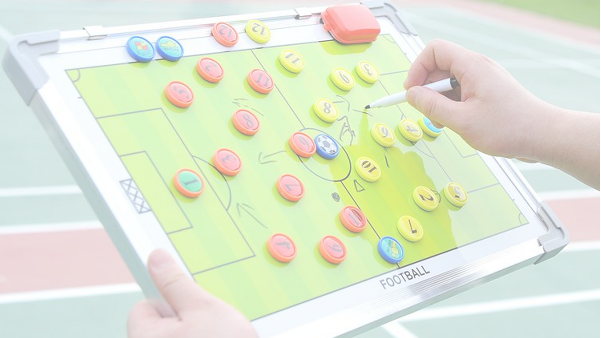
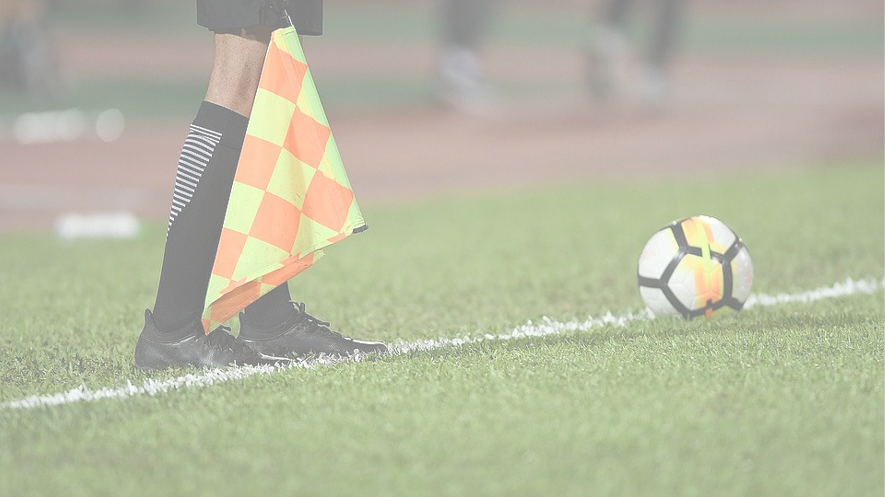
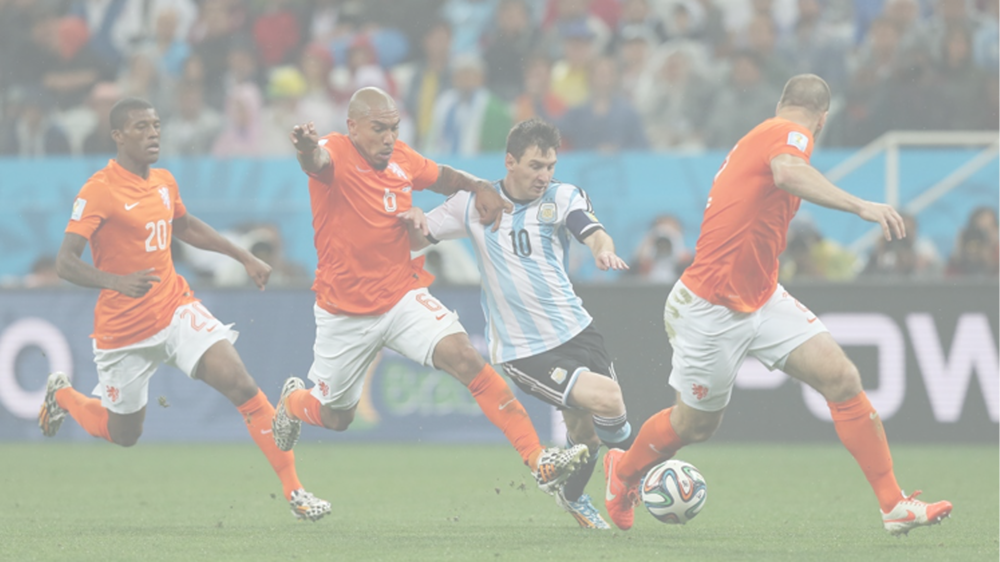
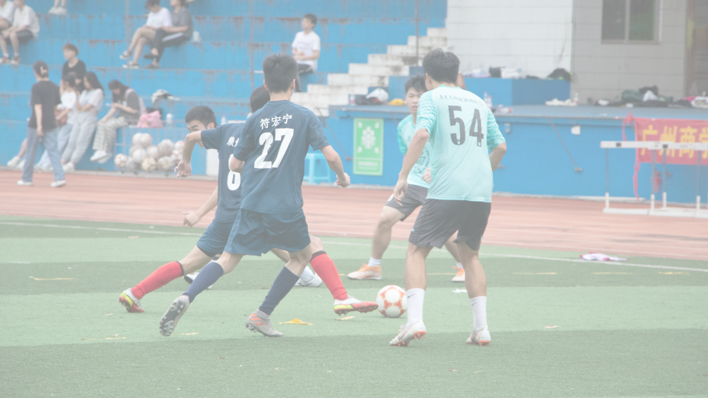
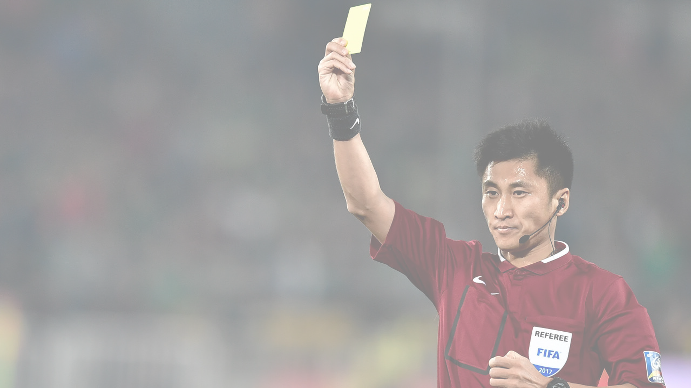
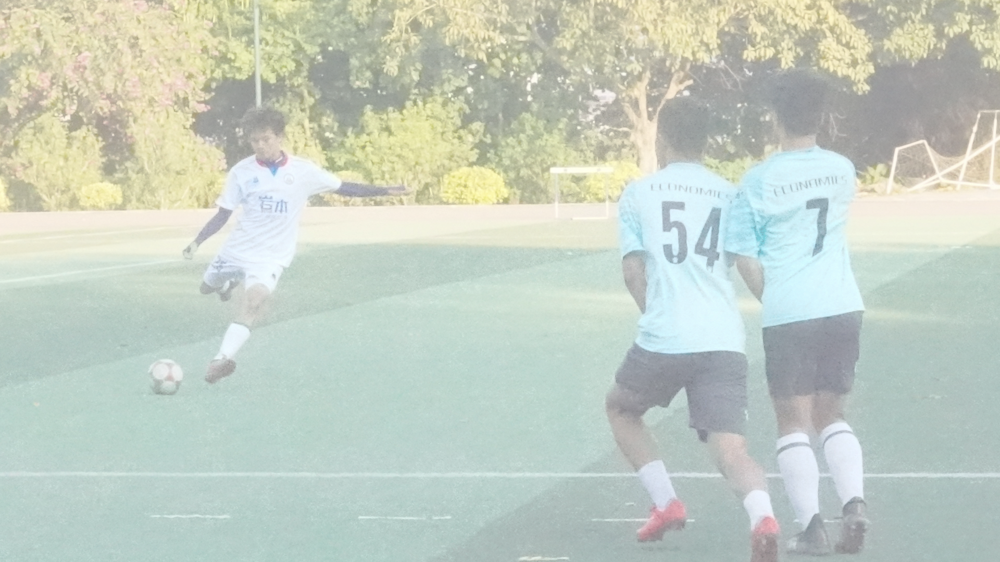

Competition
Rules







关于球场
球员位置
越位位置
犯规
犯规行为
警告犯规
任意球
关于球场
①比赛场地必须是长方形，边线的长度必须长于球门线的长度：长度：90-120米、宽度：45-90米；国际比赛场地长度：100-110米、宽度：64-75米；世界杯采用的长度是105米，宽度是68米。②如果球在比赛过程中破裂或损坏,那么就停止比赛；用更换的球在原球破漏时所在地点以坠球方式重新开始比赛。如果球在开球、球门球、角球、任意球、罚球点球或掷界外球等成死球时破裂或损坏就按照相应的规定重新开始比赛。在比赛中未经裁判员许可不得更换球。
③一场比赛应有两队参加，每队上场队员不得多于11名，其中必须有一名守门员。如果任何一队少于7人则比赛不能开始。
④队员在开球前被罚令出场，只可从被提名的替补队员中选一人替换。凡被提名的替补队员被罚令出场，无论是在开球前或在比赛开始后，均不得替换。
⑤一名球队官员可以在比赛时向队员进行战术指导，给予指导后必须回到自己的位置，所有的球队官员必须处于指定的技术区域内，并对自己的行为负责。
球员位置
①中锋，又称ST，是前锋的一种，是全队进攻的尖刀和主要得分手。活动范围主要在前场对方禁区附近，是足球场上最靠近对方球门的人。进球是中锋最主要职责。②二前锋，又名影子前锋，又称CF，位置一般在中锋之后。在进攻当中，紧跟在前锋身后或一侧做无球跑动，一旦中锋被成功阻挡，他应该会有保护球的动作，或把球分到无人位置，然后尝试拿球突破，尝试得分或者回传。影子前锋的主要职责是为中锋创造机会，并且自己带球突破得分。
③边锋，左边锋为LW，右边锋为RW前锋的一种，主要活动区域在前场的两个边路。边锋不仅需承担起边路进攻的职责。而且通过交插换位要完成多种战术任务。
④前腰，又称ACM，即攻击型中场，是中场位置的一种，也称为"突前前卫"，标准站位于前锋身后，负责为前锋输送进攻的炮弹，组织二次进攻。前腰的人选需要有良好的控球技术、开阔的视野和极佳的大局观，故很多前腰球员身披10号球衣，为全队的中场核心甚至于灵魂人物。
⑤前卫位于中场，又称CM，其中防守能力强又的叫CDM，即后腰。球队进攻时前卫是球队衔接后防组织进攻的基础，同时也是控制比赛节奏的核心，把握时机向前锋输送机会，协助前锋进攻；球队防守时，进行中场拦截，协助球队防守。
⑥边前卫/边后卫，左边前卫又称LM，右边前卫又称RM，左边后卫又称LB，右边后卫又称RB。两者均分为防守型和助攻型，因为一般阵形里一边只设2个边前卫或边后卫，所以尽量把两个职责合二为一，也就是攻防兼备。左右两个边前卫站在中场两侧，左右两个边后卫则站在中卫两侧。
⑦中卫，又称CB，一般视阵型而定有2-3个，常见的典型中卫往往身材高大，以方便面对对方传中等高空球来临时能够第一时间做出头球解围，也可以在进攻端利用头球得分。
⑧门将，又称GK，即守门员。守门员可以在本方禁区内用手触球进行扑救。身高臂长是大多数门将的明显特征之一，以便在面对高空球时有绝对的优势。如今的门将在整个球队的战术体系中越发重要，为后场减轻压力的这种需求也催生了一批批脚法丝毫不比前锋逊色的门将。如今传统型门将的代表有布冯，卡西利亚斯，德赫亚等等。诺伊尔则是出击型门将的代表。切赫以及埃尔森均为脚下技术好的门将的代表。
队员有中场休息的权利；中场休息不得超过15分钟。竞赛规程必须阐明中场休息的时间。只有经裁判员同意方可改变中场休息时间。
越位位置
队员处于越位位置：攻方队员出球时，其中攻方有队员比对方倒数第二名队员更接近于对方球门线且接球队员处于对方半场内。队员不处于越位位置：角球和界外球除外；他在本方半场内；他齐平于倒数第二名对方队员；他齐平于最后两名对方队员。
犯规
处于越位位置的队员，在同队队员踢或触及球的一瞬间，裁判员认为其就下列情况而言"卷入"了现实比赛中时才被判为越位犯规；·干扰比赛；
·干扰对方队员；
·利用越位位置获得利益。
犯规行为（红牌下场）
1.严重犯规；2.暴力行为；
3.向对方或其他任何人吐唾沫；
4.用故意手球破坏对方的进球或明显的进球得分机会（不包括守门员在本方罚球区内）；
5.用可判为任意球或点球的犯规破坏对方向本方球门移动着的明显的进球得分机会；
6.使用无礼的、侮辱的或辱骂性的语言及动作；
7.在同一场比赛中得到第二次警告。
被罚令出场的队员必须立即离开比赛场地附近和技术区域内。
警告犯规
1.犯有非体育道德行为；2.以语言或行动表示异议；
3.持续违反规则；
4.延误比赛重新开始；
5.当以角球或任意球重新开始比赛时，不退出规定的距离；
6.未得到裁判员许可进入或重新进入比赛场地；
7.未得到裁判员许可故意离开比赛场地。
任意球
任意球分为直接任意球和间接任意球两种。无论是直接任意球还是间接任意球，踢球时必须将球放定，踢球队员在球未经其他队员触及前，不得再次触球。直接任意球：
如果直接任意球直接踢入对方球门，判为得分。如果直接任意球直接踢入本方球门，判给对方踢角球。
间接任意球：
当裁判员判间接任意球时，应单臂上举过头，并保持这种姿势直到球踢出后被其他队员触及或成死球为止。只有当球进门前触及到另一名队员才可得分。如果间接任意球直接踢入对方球门，判为球门球；如果间接任意球直接踢入本方球门，判给对方踢角球。